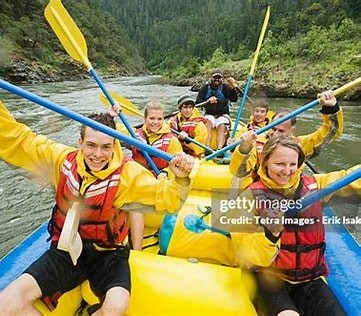

History.
The white-water rafting company was founded with a passion for adventure and a deep appreciation for the untamed beauty of rivers. Beginning as a small group of thrill-seekers eager to share their love for rafting, the company quickly grew into a respected provider of guided river expeditions. Over the years, it has expanded its operations, refining safety protocols, training expert guides, and introducing new routes that offer both adrenaline-pumping rapids and breathtaking scenic views. Through a commitment to excellence, environmental stewardship, and customer satisfaction, the company has built a legacy of unforgettable experiences—where every trip down the river is more than just a ride; it's an adventure in courage, teamwork, and pure exhilaration.

Rapid Adventures Rafting: A History of Thrills and Excellence
Founded in 1995 by a group of passionate outdoor enthusiasts, Rapid Adventures Rafting started as a dream to bring the excitement of white-water rafting to adventure seekers of all skill levels. The founders, a team of expert rafters and wilderness guides, envisioned a company that would not only offer thrilling river experiences but also prioritize safety, conservation, and community involvement.
Starting with just a handful of rafts and a small base near the roaring waters of the Colorado River, the company quickly gained recognition for its professionalism, exhilarating trips, and dedication to customer satisfaction. By the early 2000s, Rapid Adventures had expanded its operations to multiple locations, including the Snake River, Gauley River, and parts of the Grand Canyon, offering diverse experiences ranging from beginner-friendly rapids to extreme, adrenaline-pumping runs.
In addition to providing unforgettable rafting experiences, Rapid Adventures Rafting has been committed to environmental sustainability. The company has worked closely with local conservation organizations to protect river ecosystems, minimize its ecological footprint, and educate participants on responsible outdoor practices.
Today, Rapid Adventures Rafting stands as one of the premier white-water rafting companies in the country, with a legacy of adventure, safety, and respect for nature. With expert guides, state-of-the-art equipment, and a passion for the great outdoors, the company continues to push the limits of adventure while maintaining its core values.
Would you like me to refine this or add specific details based on a particular location or vision?